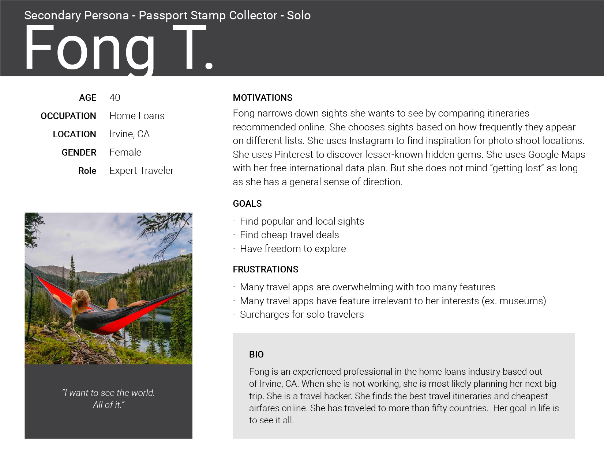
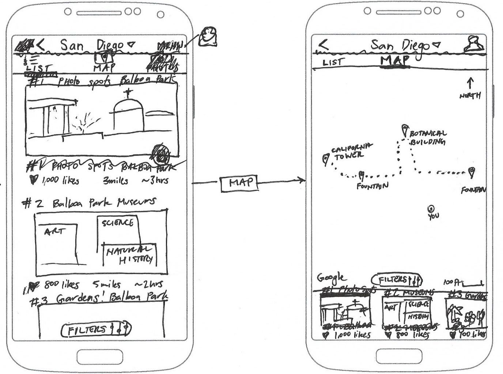
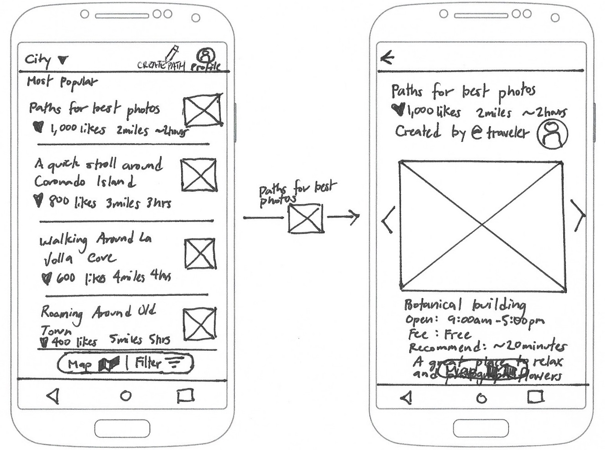
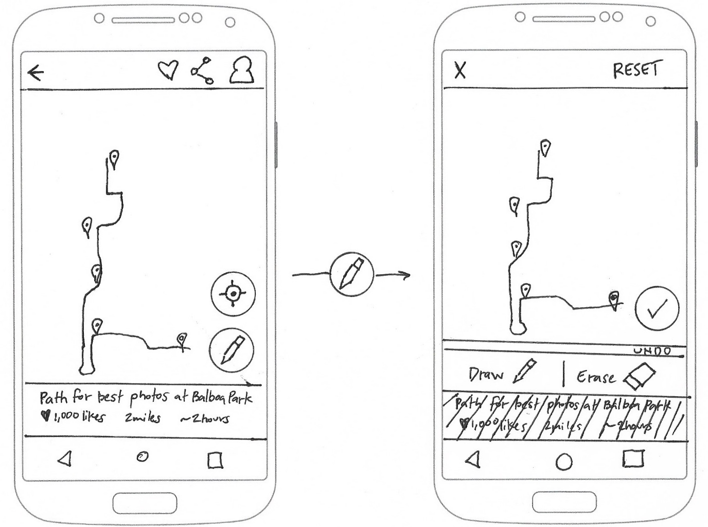

Wander
Wander
UX Research & Design: giving people more control over their map experience
UX Research and Design - Neil Ranada
Project time - 4 months
Project location - San Diego, CA
Summary
Do you love to travel? A well-planned walking path is one of the best ways to see things, especially if you’re tight on time. Wander is a travel app designed to make it easier to plan walking paths.
Problem
Most travel apps rely on computer-generated walking paths. Sometimes these paths don’t make sense, are unsafe, or give you little control to make changes.
Solution
Dial back technology and use a time-tested way of getting directions: getting another person to draw directions for you on a map.
Discovery
I once went on a trip to Kyoto, Japan. The old capital is full of incredible history and sights. I underestimated its vastness and had only two days to see it.
It turns out Kyoto is a walkable city. A Japanese travel guide gave me paper maps breaking down the city into sections with suggested walking routes. But it was raining, and it became a pain to use my rain-soaked maps without tearing them apart.

Kyoto Walks paper map. Source: http://www.jnto.go.jp
Click map to enlarge
I tried using Kyoto’s travel website instead. It has digital maps with similar walking routes. But it wasn’t mobile-friendly, and I couldn’t expand the maps to fill my phone’s screen.

Kyoto digital walking map. Source: http://www.japan-guide.com
Click map to enlarge
Why couldn’t I have a mobile-friendly map with walking paths? Did other people have the same problem?
Research
First, I needed to figure out if there was an opportunity to solve a problem. I can’t design solutions for a problem that doesn’t exist.
I started my research by making an assumption: people need a travel app that makes it easier for them to plan walking paths. To validate this, I needed to answer three questions:
- Is there a need for a tool to make it easier to plan walking paths?
- If so, who needs it?
- What features do they need?
I conducted two surveys and two rounds of interviews to find answers. I asked questions focused on past experiences and behaviors. I also wanted to know any frustrations people had with travel planning tools.
First Survey
I posted a survey online to various social media platforms and public forums. I asked general questions about people's last sightseeing experience. I didn't mention anything about walking paths at this point. I wanted to see what problems or successes people would share that I may not have considered.
Here are my key findings from the 19 responses:
- 100% said they used smartphones to browse websites to plan sightseeing.
- A majority used Google Search (89%) and TripAdvisor (84%) for research.
- Fewer people used social media in their travel research: Facebook (21%) and Instagram (21%).
- People used Facebook (79%) and Instagram (47%) to post travel photos.
- When asked to select one experience that needed improvement: "planning route and schedule" was the top issue.
Mobile-first and the need for more research
Based on the results, it wasn't clear if there was a need for a tool to make walking paths easier to plan. However, if there was a need, it was clear that I needed to use a "mobile first" design approach. It was also clear that I needed to learn how people used Google Search and TripAdvisor for travel research.
Social media played less of a role in travel research than I expected. But, I still think there may be an opportunity to discover a greater connection between maps and social media, especially since Instagram is full of photo feeds for travel inspiration. I decided it was beyond the scope of this project but may be worth researching another time.
Interviews
During this project, I took a two-week trip to the Philippines to attend a wedding on Boracay Island. Many of my friends also attended. Different groups had separate plans for sightseeing before and after the wedding. It was the perfect opportunity to make observations and conduct interviews.
Here are key findings from interviewing 12 people:
- People used Google Search or TripAdvisor to find and compare lists of top things to see and do.
- Planning tended to stop at the city level in their search. Once in Manila, people weren't sure of what places they wanted to see. If they did have an idea, they weren't sure of the best order to see everything in a short period.
- Everyone's definition of sightseeing varied. Some people wanted to walk around historical places like the Intramuros, an old walled city. Others wanted to see street markets or the giant Mall of Asia.
- People on this trip relied on Google Maps to walk from point to point. They didn't have a walking path in mind.

Casa Manila Patio, Itramuros, Manila, Philippines. Photo by Neil Ranada.
Point-to-Point Navigators vs. Planners
There’s a spectrum of how people navigate. On one end, there are what I call “point-to-point” navigators and on the other end “planners.” People on this trip leaned towards being “point-to-point” navigators. Navigating to one place at a time using Google Maps. They didn’t necessarily need a walking path with all their stops planned out.
There wasn’t evidence at this point to design a walking path tool. To move forward, I needed to find and interview “planners.” People who like having itineraries.
Christiaan Alamazan catching a Jeepney in Manila. Photo by @chrisdavid.photos.
Second Survey
Before conducting another set of interviews, I posted another survey. This time, I asked specific questions about what tools people used to plan walking paths. I provided both digital and paper options. I also needed to know what they liked most about these tools, and what they liked least.
Here are key findings from the 32 responses:
- Travel apps like Google Trips (6%), Cool Cousin (3%), and FieldTrip (1%) are not popular tools for planning walking paths.
Here is a selection of comments:
- “I don't think there is an obvious way to customize my route. I think I can create a route but it seems complicated.”
- “It can take me to shady places...”
- “Lack of suggested routes/plans to cover various sight-seeing points.”
- “When I'm abroad and don't have mobile internet access, or I'm in a heavily pedestrian urban area (like Marrakech) where the maps may not be detailed enough, then Google Maps fails me. That's when I turn to paper maps of some sort, or maybe an offline map intended for travelers if I don't need to worry about having my phone out.”
Realizing an opportunity to solve a problem
After the second round of surveys, I discovered enough evidence that some apps fall short in planning walking paths. There were two main pain points:
- Feeling unsafe
- Inability to easily create and edit a path
At this point, I realized an opportunity to design a tool for people who are most likely to use route suggestions to cover various sight-seeing points.
User Personas
I identified three people to interview who plan their travels in advance. These are people who I assessed would benefit most from a tool for planning walking paths.

Open PDF file for User Personas in another tabopen_in_new
Top 3 goals of the User Personas
- Discover itineraries that match their interests and schedule
- Easily edit their path and points of interest
- Follow a route but also have the freedom to explore
I based my decisions around these three goals throughout my design process. Next, I needed to learn from the competition.
Competitive Analysis
I analyzed the strengths and weaknesses of travel app competitors. I identified six travel apps: TripAdvisor, Google Trips, Walc, FieldTrip, Cool Cousin, and Triposo.
I created matrixes such as the one below to assess the strengths, weaknesses, opportunities, and threats of each app (SWOT analysis).
View analysis matrixes for other apps in another tabopen_in_new
I also downloaded Triposo. Out of the list of travel apps I analyzed, Triposo had the most advanced tool for planning a walking itinerary.

Screenshot from Triposo iPhone app.
Click map to enlarge
Top three strengths to include in the design:
- Crowd-sourcing to provide self-sustaining content production
- Voting system to let people decide what is most helpful
- Integration with Google Maps because its database is extensive and people trust it
Top three weaknesses to avoid in the design:
- Overwhelming number of features and information
- Computer generated routes that are unsafe or do not make sense
- Making it difficult for people to edit a path and change points of interest
Field research at Balboa Park, San Diego
I also took advantage of the fact that I live in San Diego, a major tourist destination. I spent several mornings and afternoons at Balboa Park. I hung out next to maps posted throughout the park. I casually interviewed people to find out what they were searching. I also wanted to see what they thought was helpful, and what was frustrating.
Time tested way of finding directions
People still rely on friends, or even strangers, to find directions. This behavior reinforced the crowd-sourcing and social approach in the design.
Sometimes the best way to find where you’re going is to ask someone who can draw directions for you on a paper map. With this in mind, I needed to design a digital version of this time-tested method of getting directions.
It also occurred to me that not everyone walks on paths. Sometimes people move around on wheels: wheelchairs, scooters, bikes, skates, etc. It reminded me to push for inclusive design.
Central fountain, Balboa Park, San Diego. Photo by Neil Ranada.
Meeting research goals
- Is there a need for a tool to make it easier to plan walking paths?
Yes - Who needs it?
People who plan travel itineraries like the three user personas. - What features do they need?
A platform that allows people to create, select, edit, vote, and share walking paths.
Design
After conducting user research and defining the problem, I was ready to move forward and create design solutions.
User Stories
I created a spreadsheet with a list of tasks to meet the goals of the user personas.
"As a __________, I want to __________ so that I can __________."

Open Google Sheets for User Stories in another tabopen_in_new
User Flows
I created User Flows to visually depict how people completed each task set out in the User Stories.
Search path flow
Onboarding flow

Map View
Open Draw.io for User Flows in another tabopen_in_new
Paper Wireframes
I spent the majority of my time creating wireframes to focus on the functionality of the travel app. I sketched using pen and paper which let me put my design ideas down quickly. For inspiration, I looked to patterns found in popular apps such as TripAdvisor and Airbnb.
I went through each user story and wrote the task in the top left corner of each page to focus on the particular problem I needed to solve.
Here are a couple of early wireframe sketches attempting to solve for the following user story:
"As a user...I want to search recommended paths...so that I can find the best way to see popular sights."
Flowing from a collection of cards to a map view:
Flowing from a list view to a page with information and photos for a point of interest:
User testing later revealed that I needed to use a blend of the two ideas above. A list for easier skimming instead of cards. And a map view instead of an info page with photos because that’s what testers expected after selecting a path.
The most challenging problem I focused on was how people could seamlessly make changes to customize their walking path. Here is a progression of wireframe sketches designing for the user story:
“As a user…I want to change the path on my map…so that I can modify my path.”
Early version of edit path feature:
Later version of edit path feature:

Testing revealed that most people could not associate the unlabeled Floating Action Button with making changes to a path. I discuss this issue later under the "Testing" section.
Visual Design
I moved on to visual design to see if visual hierarchy, color contrast, and the realism of mockups of the app would help users select and edit a path. I started by sketching and brainstorming to come up with a brand name.
Logo
Next, I brainstormed logo ideas for Wander. I analyzed logos from well-known companies like Facebook, Instagram, and Airbnb for inspiration. The logos tended to be flat, simple, and scalable to small sizes.
Color
I used nostalgic travel posters for color inspiration and created a mood board using Pinterest. Then I looked to Dribbble's color picker to find a color palette to match the theme I wanted to achieve. I also used Adobe's Color Wheel to find a complimentary color.
Istanbul vintage inspired travel poster from ideastorm.bigcartel.com


Typography
I chose Courgette to use for the brand name and titles. The typeface designer, Karolina Lach, describes Courgette as a medium-contrast, brushy, italic-script typeface which was appropriate for giving a loose, wispy feel to the Wander brand name.
Style Guide
Lastly, I used Google Material Design typography guidelines to complete the style guide.
Open Style Guide in another tabopen_in_new
Mockups
I created 71 pages of high-fidelity mockups using Adobe XD and Google’s Material Design guidelines.
I designed Wander to be highly interactive especially in the path editing mode. I needed users to be able to distinguish what was clickable and to create icons that looked like physical buttons. Material Design’s 3D approach was better suited for those goals than a flat design approach.
Flow for drawing a new path and having the option to undo or save changes:
Testing
I tested early and often during every phase of the design process: wireframes, mockups, and prototype. I took every opportunity to test in person or remotely online to refine my design solutions.
The most challenging problem I tried to resolve was the task: "As a registered user, I want to change the path on my map."
Initially, I used Material Design’s Floating Action Button (FAB) to allow people to edit their path. However, test results showed that the FAB was not clear in its function.
Low-Fidelity Tests
I tested the Floating Action Button wireframe sketches using click tests and navigation tests on UsabilityHub. Here is a test result showing a low success rate of people clicking on the Floating Action Button for the corresponding user story:
“As a user…I want to change the path on my map…so that I can modify my path.”
Early wireframe click test results using Floating Action Button
Open Usability Hub test results in another tabopen_in_new
High-Fidelity Tests
I then tested mockups to see if color and context would people identify the Floating Action Buttons purpose. The results showed little improvement. Again attempting to solve for:
“As a user…I want to change the path on my map…so that I can modify my path.”
Click attempts to change path were still spread out with a Floating Action Button design.
Open Usability Hub test results in another tabopen_in_new
I then redesigned the Floating Action Button and labeled it “edit path,” which yielded undoubtedly better results.
Button re-design showing high concentration of successful clicks to change path.
Open Usability Hub test results in another tabopen_in_new
The test results proved the need to break away from Material Design’s guidelines. The pencil icon is widely understood to mean edit. But it wasn’t clear what the Floating Action Button could change since Material Design doesn’t use labels.
Usability Testing
I conducted four usability tests. Two in-person and two remotely. Using Lookback.io, Quicktime, or a digital camera, I recorded people’s body language, thoughts, reactions, and where they clicked on the prototype screens. Each session was approximately 10 minutes long.
I gave testers the following tasks:
- Find a path using your current GPS location on your phone.
- Filter the list for half-day plans made for photographers.
- Select a path that will show the best photo spots at Balboa Park.
- Sign-up using your email.
- Create your profile. Upload a profile photo. Then add your profile name and story.
- “Like” the current path to save it for later.
- You decide to make some changes to the path. You’re no longer interested in the Sculpture Garden. Remove its location marker.
- You think the Spreckels Organ Pavilion on the left side of the map is more interesting than the Sculpture Garden. Add its gray location marker.
- Erase the top portion of the path and re-draw it going to the new location marker you just added.
- You think the path you created is awesome. Share it with family and friends.
Usability Test #1 Results
- In-person recording with a digital camera while the user tested the prototype on a phone.
- She had trouble figuring out what to do next after adding her profile photo and bio.
- She said the sequence of re-drawing the path before adding the new location marker felt unnatural.
Press play above to watch a clip or open full video in another tabopen_in_new
Usability Test #2 Results
- Remote video recording using Lookback.io with user testing the prototype on a phone.
- She also wasn't sure what to do next after uploading her profile photo and bio. At the end of the test, she mentioned she was looking for a "Save" or "Back" button.
Press play above or watch video in another tabopen_in_new
Usability Test #3 Results
- Remote video recording using Lookback.io with user testing the prototype on a phone.
- He had trouble figuring out which button to click on to update his profile settings.
- He tried to click "Edit Path" when asked to remove location marker for the Sculpture Garden.
- In the map view, he attempted to zoom in and see the names of locations. He said, "I can't see the Sculpture Garden."
Press play above or watch video in another tabopen_in_new
Usability Test #4 Results
- In-person video recording using Quicktime with user testing the prototype on a laptop.
- She hesitated to click on the button for “Use current GPS location.”
- She took a moment to realize she needed to click on the form field to enter her email address.
- She tried to click "Edit Path" when asked to remove the location marker for the Sculpture Garden.
Press play above or watch video in another tabopen_in_new
Three key changes based on the usability test results:
- Added name labels to the location markers.
- Allowed people to remove location markers from the edit path view.
- Added save buttons to allow people to confirm their edits, rather than use an auto-save feature.
Prototype
Open Prototype and try out the usability tasks in the section above.open_in_new
I used Adobe XD for rapid prototyping. Adobe XD was especially useful for creating flows for the many combinations of actions a person can take in the map view.
Other lessons learned: touch target size matters
Another lesson learned during the early stages of the prototype was to remember that touch target size matters for mobile devices. One person I randomly tested struggled to see anything happen when they tried to click on icons. In this case, the 24 x 24 dp icons were too small to register a response.
Material Design says touch targets should be at least 48 x 48 dp to ensure a physical size of about 9mm regardless of screen size. There should also be at least 8 dp separation between them. I made changes to include the minimum suggested touch zone size and spacing. I immediately saw testers move more fluidly through the app.
Conclusion
I was able to design an interactive feature that gives people more control over planning their walking paths.
My biggest doubt was whether people would find Wander valuable. Testing showed that my design could benefit people who like to travel with itineraries.
What surprised me most was the amount of research, design, and testing required to solve for a relatively small list of tasks. There are so many other design features to add to make the app more complete and fully functioning.
If given more time, I would create a coded prototype to test how a person would navigate at Balboa Park. A proven navigation feature would add greater value to the app.
I would also collaborate with other people who are experts in design, engineering, and business. They could offer valuable perspectives from their respective fields that I may not have considered. Being able to share and agree on ideas with a team would only make the basis for a design solution stronger.
This project was challenging and helped me grow as a designer more than any other project up to this point. I learned the value of discovering problems early and making smaller more manageable changes. I also learned the importance of being able to validate and defend my design decisions. I'll take these lessons learned and continue to improve my design process for the future.